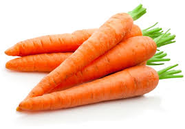
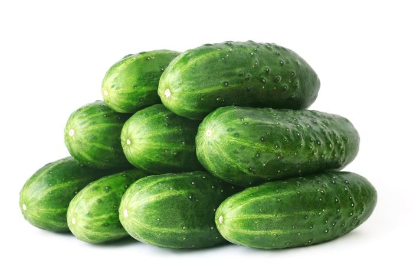

Tomate
El tomate es un vegetal rico en antioxidantes, especialmente en licopeno, que ayuda a proteger el corazón y la piel.
Más información sobre el TomateZanahoria
La zanahoria es conocida por su alto contenido de betacaroteno, que es beneficioso para la visión y la piel.
Brócoli
El brócoli es un superalimento lleno de vitaminas, minerales y antioxidantes que ayudan a combatir enfermedades.
Más información sobre el BrócoliPepino
El pepino es refrescante y muy hidratante, siendo ideal para dietas bajas en calorías y para mejorar la piel.
Más información sobre el PepinoLechuga

La lechuga es un vegetal de hojas verdes que es bajo en calorías y rico en agua, ayudando en la hidratación y la digestión.
Más información sobre la Lechuga